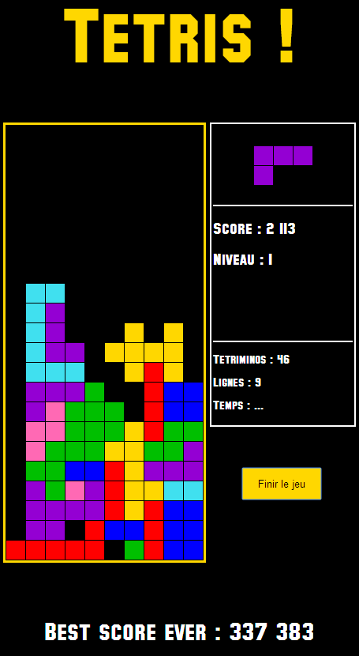

Je suis Rémi Blaise, alias Zzortell, WebDeveloper.
Ma passion : développer et coder des sites et applications Web.
Mon site, récemment créé en 2014, présente mes créations et réalisations sur le Web.
Ce n'est pour l'instant qu'une maigre collection, mais qui va se remplir petit à petit.
Vous avez donc sous les yeux un concentré de mon parcours sur le Web et un avant-goût de mes compétences.
Si vous souhaitez attaquer le plat principal, n'hésitez pas à me contacter !
Je maîtrise parfaitement toutes les technologies Web indispensables à la réalisation d'un site Web,
dont les langages incontournables HTML5, CSS3, Javascript et PHP.
De plus, je sais faire communiquer différentes applications entre elles grâce à la manipulation de toutes sortes de types de données :
je sais traiter dynamiquement des fichiers simples contenant des données formatées, utiliser du XML, du JSON,
et bien sûr me servir de bases de données telles que MySQL et les modifier dynamiquement grâce au SQL.
Mes capacités sont en constante évolution et je me forme continuellement à toutes les nouvelles technologies. Je sais ainsi utiliser des technologies complémentaires
comme AJAX ou Canvas, et manipuler des arbres XML à travers le DOM ou encore des données dynamiques grâce aux expressions régulières (RegEx).
Je sais mener un projet Web d'un bout à l'autre, de la conception à la réalisation, et travailler en équipe, notamment avec un designer.
Je suis rigoureux et volontaire, et exigent sur la qualité de mon travail. J'ai pris l'habitude de toujours coder de façon lisible, d'indenter et de commenter mon code correctement.
Je sais coder l'ensemble d'un projet en programmation orientée objet (POO).
J'ai également appris à établir une architecture claire et à définir de façon perspicace des chemins ergonomiques, grâce à l'utilisation d'un 'routeur' ou simplement de .htaccess.
Bref, vous l'avez compris : je sais tout faire sur un site web.
Concrètement, je sais mettre en place un site en suivant un design, le maintenir et l'améliorer dans le respect de celui-ci.
Je sais également créer une dynamique côté serveur, générer des pages muables dans le temps, recueillir et stocker des informations dans une base de données, pour la création d'une application type blog, chat ou forum par exemple, la gestion d'un espace membre, la sauvegarde de préférances des visiteurs ou la collecte statistique.
Je sais faire la liaison entre différentes applications, afin de pouvoir par exemple publier des résultats en temps réel.
Je sais créer un responsive design, c'est-à-dire un design qui s'adapte à la page à la résolution et au périphérique du visiteur, notamment pour les appareils mobiles.
Côté client, je sais créer une dynamique visuelle, faire apparaître et disparaître des élements, changer le contenu et soliciter une ressource du serveur au sein d'une page sans rechargement complet nécessaire.
Enfin, je sais développer un site de façon à ce qu'il puisse être facilement repris par la suite, et sais mettre en place des espaces administrateurs propres afin de permettre aux personnes autorisées de pouvoir modifier le contenu et mettre à jour leur site de façon autonome.
Cette fois pas de doute : je sais tout faire sur un site web.
Vous pouvez me contacter facilement à cette adresse : remi.blaise@gmx.fr.
N'hésitez pas à me faire part de vos impressions et de vos commentaires ! ;)
J'ai créé ce site, je pense que vous l'avez remarqué, afin d'accueillir mes réalisations sur le web, de me présenter et de vous exposer ma passion.
Ce site a été fait en responsive design, c'est à dire qu'il a été conçu par s'adapter à votre résolution, particulièrement si vous êtes sur votre mobile.
Si vous êtes sur PC, vous pouvez voir le résultat par vous-même en faisant varier manuellement la taille de la fenêtre de votre navigateur.
Le design, très simple, a été imaginé par moi-même. J'ai tout fait pour rendre mon site chaleureux et accueillant. Si vous avez des remarques à son propos, faites-moi en part !
Ce site a été conçu à la demande du club de sabre de Chatou, à l'occasion d'une grande manifestation sportive accueillie par le club : les Championnats de France de Sabre Juniors 2014.
Il a été conçu en travail étroit avec François Berrubé, le designer de l'équipe. Le projet a débuté vers Noël 2013 et c'est achevé en Mai à la suite de la compétition, après plusieurs mois de travail, dont le dernier a été particulièrement intensif.
Le site a eu un succès incroyable bien au-delà de nos espérances, avec des chiffres gargantuesques :
25 000 visiteurs provenant de toute la France et même de l'étranger ont visité le site, ayant effectué près de 30 000 visites et totalisant sur l'ensemble du site le chiffre faramineux de 100 000 vues !!!
Ce site contient quelques particularités, dont :
La mise en ligne des résultats de la compétition en direct grâce à la mise en place d'une liaison avec les logiciels de gestion de compétition Lames et Engarde, ce qui a constitué l'atout majeur du site et a grandement contribué à son succès (représente 70% des vues).
La mise en ligne préalable des listes des tireurs et des arbitres.
La mise en ligne de photos prises durant la compétition, consultables directement sur le site.
Une publication de témoignages recueillis avant, durant et après la compétition, dont un aperçu est visible sur la page d'accueil.
L'intégration d'un plan d'accès Google Maps Engine et la publication de la carte de la buvette.
La collecte de statistiques permettant de suivre le traffic sur le serveur.
La mise en place d'une page de redirection en cas d'erreur 404.
La réalisation de ce site, qui c'est faite de manière très étroite avec mon designer François, a constitué ma première véritable expérience dans le monde extérieur :
c'était en effet le premier travail que je n'effectuais pas pour moi-même, et la première fois que je voyais tous les aspects de la réalisation d'un site, de la conception à l'apposition de la touche finale,
en passant par la réalisation de maquettes, l'implémentation d'applications et la maintenance, la mise à jour et la réaction immédiate à des situations imprévues.
Ce fut également la première fois que je travaillais avec un véritable designer. L'échange avec François fut très aisé et fluide, nous fûmes très réactifs et particulièrement efficaces, et chacun proposant des idées pertinentes, prenant des initiatives et apportant un travail de qualité.
Le travail en équipe, que ce soit avec François ou avec les autres membres (tous bénévoles) de l'organisation, fut donc un aspect très important pour moi de l'expérience.
Le site a été conçu dès le départ pour une utilisation mobile, la compatibilité et un design adapté a donc été une de nos priorités.
De plus, un accent particulier a été mis sur le dynamisme au sein des pages : vous pouvez notamment voir notre en-tête accrocheur et dynamique.
Une cohérence visuelle a été adoptée et mise en place sur l'ensemble du site, avec l'identité de la compétition qui se retrouve sur chaque page mais également une identité propre à chaque section du site à travers l'affectation d'une couleur à chacune.
Une utilisation de toutes les technologies principales a été faite, afin de réaliser un site complet doté d'un dynamisme client et serveur.
Un travail assidu et de qualité a été effectué tout au long de cette merveilleuse aventure, et, vous l'aurez sans doute compris, je suis personellement assez fier de notre œuvre.
Je remercie tout particulièrement François Berrubé, ainsi que Béline Boulay et Alexandre Maldera.
Tetris est un ancien jeu vidéo, conçu en 1984 par l'ingénieur russe Alexei Pajitnov sur un micro-ordinateur soviétique, à partir d'un jeu de puzzle traditionnel russe.
Il fit rapidement succès, à telle point que toute les institutions moscovites disposant d'ordinateurs y jouèrent bientôt durant leurs heures de travail.
Repris par des grands producteurs, il a fait l'objet d'une guerre de droit internationale. Il est à présent considéré comme un grand classique du jeu vidéo, au même titre que Pong.

Ayant achevé mon apprentissage du Javascript, j'ai réalisé ce jeu en Février 2014. Il est donc entièrement réalisé en Javascript. C'est grâce à cette exercice que je maîtrise aujourd'hui parfaitement le langage.
J'y ai mis beaucoup de cœur et d'amour, profitez-en !
Étant donné que la compatibilité n'était pas un objectif, son fonctionnement correct n'est assuré que sur la dernière version de Google Chrome.
Historique des versions :
β-1.0 (24/02/14) : Version bêta-test, pas encore très au point, beaucoup de fonctionnalités manquantes.
1.0 (28/02/14) : L'application fonctionne, toutes les fonctionnalités basiques sont installées : à part quelques aspects qui restent en suspens, mon Tetris équivaut n'importe quel Tetris sur la toile.
Les versions 2 et 3 sont déjà prévues, à plus ou moins long terme.
tpe : Une ville sous-marine autonome
Réalisée à l'occasion de mon TPE de 1ère S en Mars 2014, ce fut ma première réalisation en Javascript, qui marqua la fin de mon apprentissage de ce langage.
Elle avait pour but d'illustrer notre TPE, dont la problématique était : « Comment fonder une ville sous-marine entièrement autonome ? ».
L'application devait donc montrer les "plans" (c'est-à-dire des schémas) de la cité imaginée, et rendre cliquables de nombreux d'éléments de façon à ce que des explications scientifiques puissent s'afficher sur chacun d'entre eux.
Il faisait partie intégrante de la notation et donc du TPE.
Ce projet a été réalisé en une seule semaine dans des conditions de stress important.
J'y ai consacré tout le temps libre de ma semaine, du lundi à 14h au dimanche à minuit, étant donné que l'échéance tombait le lundi suivant.
Certains aspects ont été sacrifiés mais le rendu est assez proche de ce qu'on voulait.
Le point négatif restait la compatibilité navigateur, que je n'ai pas du tout eu le temps de travailler.
Sortant tout juste de mon apprentissage du html, ce fut mon tout premier projet sur le web.
Je jouait très régulièrement avec un ami à Hammerfest, un jeu développé par la Motion Twin (qui a fait par ailleurs beaucoup d'autres jeux dont je vous recommande SkyWar et Hordes), et, toujours en quête de terres nouvelles, nous parcourions la toile à la recherche de sites d'astuces susceptibles de nous aider.
Malheureusement, malgré tout la volonté de bénévoles fans d'Hammerfest, aucun ne nous a vraiment satisfait.
C'est alors que nous avons imaginé ce guide, complet, astucieux et ergonomique, qui devait rassembler les plans de l'ensemble des Cavernes d'Hammerfest, recensant tous les bonus et passages secrets du jeu.
Le guide devait accompagner le joueur durant tout son parcours, quel que soit son niveau et le chemin qu'il prend, l'aidant dans son ascension de la pyramide des scores, symbole de la hiérarchie des joueurs d'Hammerfest.
Si nous avons pas eu ni le temps, ni la patience, ni le skill nécessaire à la réussite d'une telle entreprise (car en fin de compte, nous n'étions pas de vrais gamers acharnés),
le site lui a été réalisé (ainsi qu'une quarantaine de niveaux, ce qui représente un tiers du jeu, et des dizaines et des dizaines d'heures de gaming intensif),
et, malgré le fait que je débutais tout juste en programmation web, je suis aujourd'hui assez fier de ce que j'ai pu faire avec aussi peu de connaissances.
Évidemment, le contenu réel n'y est pas (je n'ai d'ailleurs pas mis en ligne les niveaux faits), le design et le site en lui-même sont bels et bien là, je considère donc mon travail comme abouti, étant avant tout programmeur et non joueur, et mon objectif de réaliser un site web original et bien pensé atteint.
Ce qui est présenté n'est donc qu'une ébauche de ce qu'aurait été le site s'il avait été terminé et mis en ligne.
J'ajoute part ailleurs les captures des niveaux faits tels qu'ils auraient été sur le site, pour vous donner une idée.